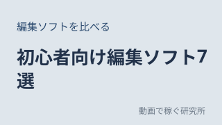

動画編集初心者の頃に、欲しかったものを。
本業は、動画とはまったく関係のない仕事です。動画編集ソフトの使い方も、YouTubeでどうやって稼ぐのかも、何もわからないところから始めました。
「ソフトが多すぎて選べない」「ボタンの意味がわからない」「何時間もかけてカットしても終わらない」。そんなつまずきを何度も経験して、初心者でも使える編集ソフト「RINSEQ(リンセック)」を自分で作りはじめました。
このサイトでは、その中で調べたこと・試したことを、あの頃の自分にもわかる言葉でまとめています。
4つのテーマ
新着記事

編集ソフトを比べる2026.10.02
【2026年】初心者向け動画編集ソフトおすすめ7選|6つの基準で採点・比較
Filmora・PowerDirector・Clipchamp・CapCut・iMovie・DaVinci Resolve・Premiere Proの7本を、使いやすさ・料金・YouTube向けの機能など6つの基準で採点。良い点も気になる点も正直にまとめました。